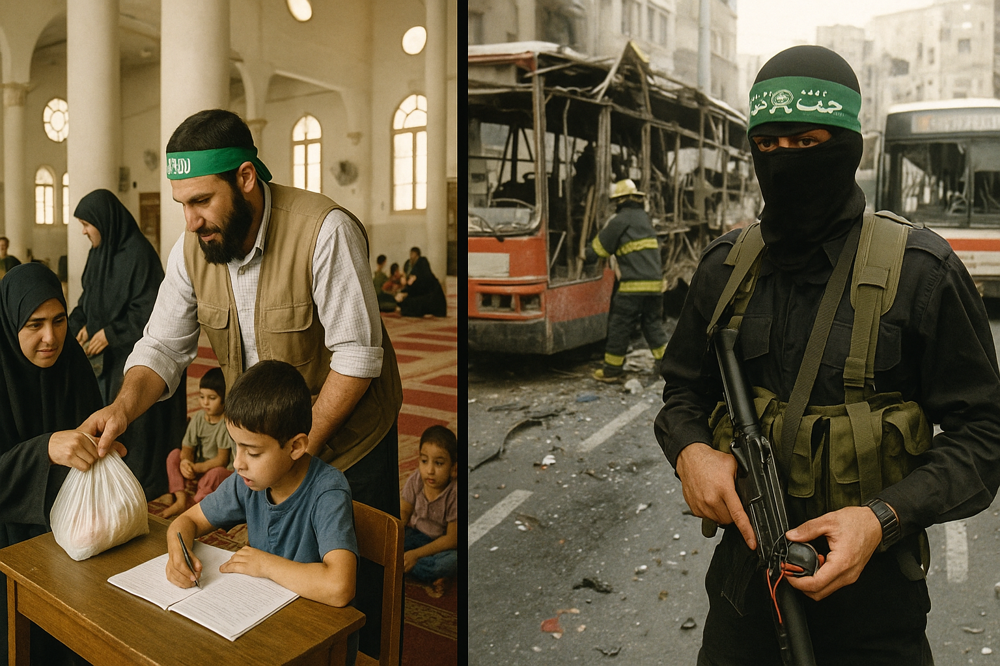
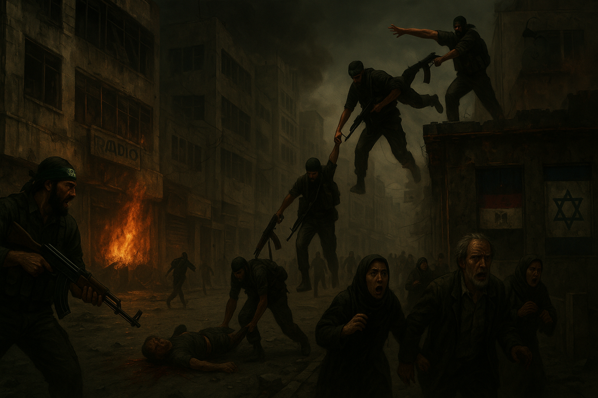

De mezquitas a misiles: la historia cruda del ascenso de Hamás
 11 de Mayo, 2025
11 de Mayo, 2025
A360
Gaza, diciembre de 1987. Mientras en las calles estalla la primera intifada y los niños palestinos arrojan piedras contra tanques israelíes, un grupo de hombres liderado por el jeque Ahmed Yassin, ciego, paralizado y profundamente carismático, funda el Movimiento de Resistencia Islámica: Hamás. Nacido del tronco de los Hermanos Musulmanes, este grupo pronto dejaría de ser una organización caritativa islámica para convertirse en una de las fuerzas más letales y decisivas del conflicto palestino-israelí. Su objetivo: la destrucción de Israel. Su método: la yihad.
De mezquitas a trincheras
A360
Hamás comenzó construyendo influencia donde el Estado palestino no existía. Escuelas, hospitales, ayuda alimentaria, mezquitas convertidas en centros sociales. Todo bajo el marco religioso de una Palestina íslámica. Mientras la OLP de Arafat se manchaba de corrupción y negociaba en Oslo, Hamás predicaba pureza, resistencia y martirio. Su carta fundacional de 1988 no dejaba espacio para la ambigüedad: la existencia de Israel era incompatible con el islam y debía ser erradicada.
Pero no solo rezaban. En los años 90, su brazo armado, las Brigadas Izz ad-Din al-Qassam, se dio a conocer con atentados suicidas en autobuses, discotecas y mercados israelíes. Entre 1993 y 2000, mientras la OLP intentaba mantener vivos los Acuerdos de Oslo, Hamás saboteaba cada gesto de paz con explosivos y sangre. En Israel, sus acciones consolidaron una narrativa de que no había con quién negociar.
Las urnas y el error de Occidente
En 2006, el pueblo palestino habló con su voto. Harto de la corrupción de Fatah, de promesas incumplidas y de una ocupación interminable, le entregó a Hamás la mayoría absoluta en el Consejo Legislativo Palestino. Fue una victoria aplastante. Para Occidente, que había exigido elecciones como condición democrática, el resultado fue un golpe en la cara. La reacción fue inmediata: boicot financiero, aislamiento diplomático, y una estrategia de asfixia. Estados Unidos, la Unión Europea e Israel exigieron lo imposible: que Hamás se desarmara, reconociera a Israel y aceptara acuerdos que nunca firmó.
Mientras tanto, dentro del gobierno palestino, comenzó la guerra fría interna. Fatah, con el presidente Mahmud Abbas al frente, se negaba a ceder poder real a Hamás. El dinero no llegaba, la tensión escalaba, y la lucha por el control absoluto estaba servida.
2007: el golpe
A360
En junio de 2007, Hamás tomó una decisión brutal: eliminar a Fatah de Gaza por la vía armada. Lo hicieron con eficiencia militar y sin misericordia. Combatientes de Fatah fueron ejecutados a sangre fría, arrojados desde azoteas, arrastrados por las calles. Oficinas gubernamentales tomadas, emisoras de radio silenciadas, arsenal capturado. En menos de una semana, Gaza era suya. Fatah huyó o fue exterminado.
Israel cerró fronteras. Egipto miró hacia otro lado. Occidente repitió el discurso de "no negociar con terroristas". Y Gaza quedó atrapada entre el autoritarismo islámico de Hamás y el cerco militar y económico israelí. Un laboratorio de sufrimiento.
El día después
Desde entonces, Hamás gobernó Gaza sin elecciones, con mano dura. Censura, torturas, ejecuciones extrajudiciales. Pero también con una red de servicios sociales que seguía dando alimento y asistencia donde nadie más llegaba. A ojos de muchos gazatíes, Hamás era un verdugo necesario. Para otros, el único escudo frente a Israel.
Sin embargo, tras la guerra iniciada en octubre de 2023, la realidad cambió. Israel emprendió una ofensiva militar sin precedentes contra la Franja de Gaza, con el objetivo explícito de desmantelar el poder de Hamás. A día de hoy, gran parte de su infraestructura ha sido destruida, sus líderes están muertos o escondidos, y su control sobre el territorio está severamente debilitado, si no eliminado por completo.
La historia del ascenso de Hamás ha llegado a un punto crítico. Lo que comenzó con un clérigo en silla de ruedas y un libro sagrado, terminó en un baño de sangre, ruinas y un futuro aún incierto para Gaza y para Palestina.